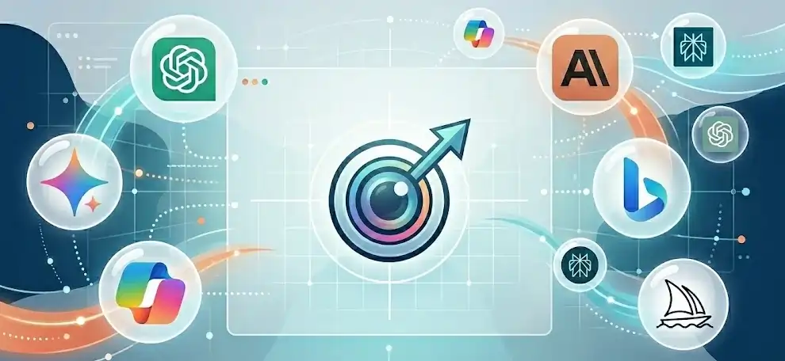

GEO SEO : Comment Optimiser votre Contenu pour les IA en
2026
Mis à jour : février 2026Lecture : 12 minPar l'équipe Alizée Web

GEO SEO
GEO SEO, SEO IA, GEO IA — trois noms pour une même
révolution.
En 2025, les AI Overviews de Google ont réduit le taux de
clic position #1 de 58 %. Les moteurs de
recherche traditionnels ne sont plus les seuls à
distribuer le trafic.
Voici ce que montrent les données académiques — et ce que
vous pouvez faire dès maintenant.
Qu'est-ce que le GEO SEO ? (Définition 2026)
Le GEO SEO (Generative Engine Optimization) est la
discipline qui optimise les contenus web pour être cités
par les moteurs de recherche à IA — ChatGPT, Perplexity,
Google AI Overviews, Copilot. Il complète le SEO
traditionnel sans le remplacer, avec des techniques
distinctes basées sur des données d'études académiques.
Le terme GEO a été formalisé par l'étude de Aggarwal et
al. (Princeton University / IIT Delhi), publiée lors de
la conférence ACM KDD 2024 sous le titre "GEO:
Generative Engine Optimization" (arXiv:2311.09735,
doi:10.1145/3637528.3671900). C'est la première étude à
tester systématiquement 10 000 requêtes pour mesurer ce
qui fonctionne dans les réponses générées par IA.
"Generative engines represent a new paradigm of
information access that fundamentally changes how
content is discovered and consumed online. Optimizing
for these systems requires a distinct approach from
traditional search engine optimization."
— Aggarwal, Murahari, Rajpurohit et al., Princeton
University / IIT Delhi — KDD 2024
En France, trois termes circulent pour décrire la même
discipline. Voici comment les distinguer.
Terme
Définition
Plateformes cibles
SEO traditionnel
Optimiser pour les moteurs de recherche
classiques
Google, Bing (résultats organiques)
SEO IA
Terme générique français pour toute optimisation
liée aux IA
Tous moteurs IA
GEO (Generative Engine Optimization)
Terme académique introduit par Princeton (2023)
— optimiser la visibilité dans les réponses
générées
Pourquoi le GEO SEO est Urgent en 2026 (Les Chiffres)
La priorité GEO absolue en 2026 : être cité dans les
réponses IA avant que vos concurrents le
soient.
En 2025, le taux de clic sur la position #1 Google a
chuté de 58 % quand un AI Overview est affiché. Selon
Pew Research (juillet 2025), les sessions sans clic
atteignent 26 % avec les AI Overviews contre 16 % sans.
Le trafic web organique change structurellement.
L'impact sur les clics : Pew Research
Institute (juillet 2025) a analysé 68 879 requêtes
Google enregistrées en mars 2025 auprès de 900 adultes
américains. Résultat : CTR de 8 % quand un AI Overview
est affiché, contre 15 % sans AI Overview — une chute
de 47 %. Source :
pewresearch.org — AI Overviews CTR Study
L'expansion des AI Overviews : Les AI
Overviews apparaissent sur 16 à 25 % de toutes les
requêtes Google. En décembre 2025, les données Ahrefs
confirment que le CTR position #1 a chuté de 58 % sur
les requêtes avec AI Overview.
La bonne nouvelle : Seer Interactive
(étude sur 3 119 requêtes, 42 organisations, juin 2024
— septembre 2025) montre que les sites cités dans un
AI Overview gagnent +35 % de clics organiques et +91 %
de clics payants. Être cité par l'IA, c'est gagner du
trafic, pas en perdre. Source :
ideava.com — AI Overviews CTR Decline
La conversion ×23 : Les données
convergentes d'Ahrefs, SingleGrain et Go Fish Digital
confirment que le trafic provenant de citations IA
convertit 23 à 27 fois mieux que le trafic organique
traditionnel. Le SaaS Tally rapporte que 25 % de ses
inscriptions proviennent de mentions dans les IA.
Le dark funnel IA : Un client XFunnel
représentant moins de 1 % du trafic total provenant de
ChatGPT générait 15 % des conversions réelles. Le
trafic IA est faible en volume mais massif en
intention.
La conclusion n'est pas la panique — c'est l'adaptation
stratégique. Alizée Web accompagne ses clients dans
cette transition vers un SEO hybride qui capture le
trafic classique et les citations IA.
×23
Le trafic IA convertit 23 fois mieux que le trafic
organique classique.
Nos clients Alizée Web bénéficient d'un suivi mensuel
des KPIs GEO intégré à leur rapport SEO.
ChatGPT, Perplexity, Google AI Overviews et Copilot ne
fonctionnent pas de la même manière. Chacun a son propre
index, ses propres sources privilégiées et ses propres
signaux de ranking. Une stratégie GEO efficace doit
s'adapter à chaque plateforme séparément.
Plateforme
Source d'index
Sources privilégiées
Signal clé
Google AI Overviews
Index Google
Contenus top 10 organic (76,1 % overlap)
Autorité topique + E-E-A-T
ChatGPT Search
Index Bing + Wikipedia
Wikipedia (47,9 % du top 10) + pages sans
visibilité Google
Mentions web + Wikipedia
Perplexity
Web crawl propre
Reddit (46,7 % du top 10) + contenus récents
Fraîcheur + communautés
Copilot (Bing)
Index Bing
Sites indexés via Bing Webmaster Tools
Indexation Bing directe
28,3 % des pages les plus citées par ChatGPT ont zéro
visibilité sur Google.
Ranker #1 sur Google ne suffit pas. Il faut être indexé
sur Bing séparément via Bing Webmaster Tools. Microsoft
a lancé en 2026 la fonctionnalité "AI Performance" dans
Bing Webmaster Tools pour suivre les citations
Copilot. Source : Search Atlas, analyse de 18 377
requêtes.
Action immédiate : inscrivez votre site
sur
Bing Webmaster Tools. C'est gratuit, ça prend 5 minutes, et c'est le
prérequis absolu pour ChatGPT et Copilot.
Selon Search Atlas (analyse de 5,5 millions de réponses
IA sur 748 000 requêtes), seulement 11 à 14 % des
sources top-citées sont partagées entre ChatGPT,
Perplexity et Google AI Overviews. Être visible sur un
moteur IA ne garantit pas la visibilité sur les autres.
Votre site est-il cité par ChatGPT ou Perplexity ?
La plupart des entreprises ne le savent pas. Alizée Web
effectue un audit GEO complet pour identifier vos
opportunités de citation IA — offert, sans engagement.
Ce Qui Fonctionne Vraiment en GEO SEO (Par Niveau de
Preuve)
La tactique GEO la plus efficace est l'ajout de
statistiques chiffrées et de citations d'études — +30
à +40 % de visibilité mesurée.
L'étude Princeton/IIT Delhi (KDD 2024, 10 000 requêtes
testées) a classé 9 tactiques par efficacité. Le keyword
stuffing réduit la visibilité de −10 %. Voici le
classement complet par niveau de preuve.
Niveau 1 — Preuve académique directe (étude Princeton,
n = 10 000)
Statistiques et données chiffrées :
+30 à +40 % de visibilité dans les réponses IA — la
plus haute efficacité mesurée. Intégrer des chiffres
vérifiables dans chaque section est la tactique GEO la
plus rentable.
Citations d'autorités et études :
effet similaire (+30 à +40 %). Les IA favorisent les
contenus qui citent des sources vérifiables avec URL.
Quotations d'experts : inclure des
citations directes d'experts nommés avec leur titre et
institution augmente la citabilité.
Ajout de contenu fluide : reformuler
et enrichir les passages existants plutôt qu'ajouter
des sections satellites produit de meilleurs
résultats.
Niveau 2 — Corrélations fortes (Ahrefs, Search Atlas,
Seer)
Mentions de marque sur le web :
corrélation de 0,664 avec les citations IA contre
0,218 pour les backlinks. Le earned media prime sur
les liens. Source :
ahrefs.com — AI Overview Brand Correlation
Fraîcheur du contenu : 76,4 % des
pages citées par ChatGPT ont été mises à jour dans les
30 derniers jours (Ahrefs, décembre 2025). Source :
ahrefs.com — AI Brand Visibility Correlations
Présence sur YouTube : signal de
mention le plus fort toutes plateformes confondues
selon Ahrefs.
Schema markup : Article, FAQPage et
HowTo augmentent la structuration extractable par les
LLMs.
Niveau 3 — Bonnes pratiques structurelles
Réponses directes en tête de section (BLUF)
:
Perplexity et ChatGPT privilégient les affirmations
directes ("Le meilleur X est Y") plutôt que les
formulations nuancées.
Contenu 2 000+ mots : les articles
longs sont cités 3× plus souvent que les articles
courts par les IA.
Tables et listes : les tableaux sont
cités 2,5× plus souvent. Les listicles représentent 50
% des citations IA (étude Onely).
Wikipedia comme levier indirect :
Wikipedia représente 7,8 % de toutes les citations
ChatGPT (47,9 % des sources top 10). Si votre marque
n'a pas de page Wikipedia, enrichir les pages de votre
industrie reste un levier pertinent.
llms.txt : fichier non standardisé,
aucune preuve d'efficacité mesurée à ce jour
Domain Rating élevé seul :
corrélation faible avec les citations IA vs
corrélation forte avec les mentions web
Contenu 100 % IA sans relecture :
les LLMs détectent et dépriorisent les contenus IA
non authentiques
Les KPIs GEO ≠ Les KPIs SEO
Le GEO SEO nécessite des métriques propres. Le trafic
organique et le positionnement Google ne mesurent pas la
visibilité dans les IA. Les nouveaux KPIs essentiels
sont : la Citation Frequency (fréquence de citation),
l'AI Share of Voice, et le taux de conversion du trafic
IA.
KPI SEO traditionnel
KPI GEO équivalent
Outil de mesure
Position Google (ranking)
Citation Frequency (% requêtes où la marque est
citée)
Otterly.ai, Peec AI, Profound
Part de voix organique
AI Share of Voice
Scrunch AI, Semrush AI Toolkit
CTR moyen
Sentiment de citation (positif / neutre /
négatif)
Peec AI, Mention
Trafic organique
Trafic depuis ChatGPT / Perplexity (segments
GA4)
Google Analytics 4
Nombre de backlinks
Nombre de mentions web (brand mentions)
Ahrefs Alerts, SEMrush
En 2026, ChatGPT reste la porte d'entrée la plus
accessible pour les marques modestes selon Ahrefs — son
index Bing est moins compétitif que l'index Google pour
les petites marques. Chez Alizée Web, nous intégrons ces
KPIs GEO dans nos rapports de suivi mensuels.
🛠️
Vous préférez déléguer la mise en place à des experts
?
Alizée Web implémente les optimisations GEO sur votre
site existant : restructuration BLUF, Schema markup,
indexation Bing, suivi mensuel des citations.
Pour être cité par les IA en 2026, voici les 8 actions
prioritaires classées par impact et facilité
d'exécution. L'étude Princeton confirme que les 3
premières actions (statistiques, citations, structure
BLUF) génèrent à elles seules +30 à +40 % de visibilité
dans les réponses génératives.
Inscrivez votre site sur Bing Webmaster
Tools.
Action immédiate, gratuite, 5 minutes. Prérequis
absolu pour ChatGPT et Copilot. Utilisez "AI
Performance" pour suivre vos citations Copilot.
Restructurez vos pages existantes en BLUF.
Chaque section H2 doit s'ouvrir sur une réponse
directe de 40 à 60 mots. Reformatez vos 5 pages les
plus trafiquées en priorité.
Ajoutez des données chiffrées et des citations
d'études.
Intégrez des statistiques vérifiables dans chaque
section. Citez vos sources avec URL visible. C'est le
signal #1 pour les LLMs.
Convertissez vos articles en listes et
tableaux.
Reformatez les sections de conseils en listes
numérotées ou à puces. Ajoutez un tableau comparatif
par article. Impact immédiat sur la citabilité.
Construisez votre présence sur des plateformes
tierces.
Publiez sur LinkedIn, créez une chaîne YouTube,
contribuez à des articles sectoriels. Les mentions web
comptent 3× plus que les backlinks pour les citations
IA.
Implémentez le Schema markup Article +
FAQPage.
Structurez chaque article avec Schema JSON-LD. La FAQ
en bas d'article est le format le plus extractable
pour les IA.
Adoptez une cadence de mise à jour
mensuelle.
Perplexity favorise exponentiellement les contenus
récents. Mettre à jour la date et ajouter 100 à 200
mots de nouvelles données chaque mois suffit.
Mesurez avec des outils GEO dédiés.
Mettez en place Otterly.ai ou Peec AI pour tracker vos
citations. Sans mesure, pas d'optimisation possible.
FAQ — Vos Questions sur le GEO SEO
Le GEO SEO remplace-t-il le SEO traditionnel ?
Non, le GEO SEO complète le SEO traditionnel sans le
remplacer. En 2025, 95 % des Américains utilisent
encore les moteurs de recherche classiques chaque
mois. Le trafic IA représente moins de 0,15 % du
trafic web total. La stratégie gagnante combine les
deux : SEO pour le volume, GEO pour la conversion (le
trafic IA convertit 23× mieux).
Combien de temps pour apparaître dans ChatGPT après
optimisation ?
Il n'existe pas de délai garanti. ChatGPT utilise
l'index Bing (mise à jour régulière) et ses propres
données d'entraînement (mise à jour périodique). Les
résultats GEO les plus rapides arrivent via Google AI
Overviews (1 à 4 semaines après indexation) et
Perplexity (fraîcheur quasi-temps réel). Comptez 1 à 3
mois pour ChatGPT.
Le GEO SEO fonctionne-t-il pour les PME et TPE ?
Oui, et ChatGPT est particulièrement accessible aux
marques modestes. L'étude Ahrefs (décembre 2025)
montre que 28,3 % des pages les plus citées par
ChatGPT ont zéro visibilité sur Google. Une PME avec
un contenu structuré peut être citée par ChatGPT avant
de ranker sur Google. C'est une opportunité unique
pour les sites jeunes.
Faut-il créer du contenu différent pour chaque IA ?
Une base commune solide (BLUF, statistiques,
structure, Schema) fonctionne sur toutes les
plateformes. Ensuite, affinez : pour Perplexity, misez
sur la fraîcheur ; pour ChatGPT, visez Wikipedia et
les mentions web ; pour Google AI Overviews, restez
sur les fondamentaux SEO (top 10 organic = 76,1 % des
sources citées).
Qu'est-ce que le GEO-bench de l'étude Princeton ?
Le GEO-bench est le premier benchmark académique pour
mesurer la visibilité dans les moteurs génératifs.
Créé par Aggarwal et al. (Princeton / IIT Delhi, KDD
2024), il teste 10 000 requêtes réelles sur 9 domaines
thématiques. C'est la référence scientifique du
domaine. L'étude complète est disponible sur arXiv
(arXiv:2311.09735) et ACM
(doi:10.1145/3637528.3671900).
Alizée Web propose-t-elle des audits GEO ?
Oui. Alizée Web intègre l'audit GEO dans ses
prestations SEO depuis 2025. Notre équipe analyse
votre visibilité actuelle sur ChatGPT, Perplexity et
Google AI Overviews, identifie les opportunités de
citabilité et déploie les optimisations prioritaires.
Contactez-nous pour un audit GEO offert sur votre
site.
Optimisez votre Visibilité IA avec Alizée Web
Le GEO SEO est la compétence SEO la plus sous-exploitée
en France en 2026. Pendant que vos concurrents
attendent, vos contenus peuvent déjà être cités par
ChatGPT et Perplexity. L'équipe Alizée Web vous
accompagne de l'audit à l'implémentation.
Nous analysons gratuitement votre visibilité actuelle
sur les moteurs IA et vous livrons un plan d'action
GEO concret. Pas de jargon, pas d'engagement — un
rapport clair.